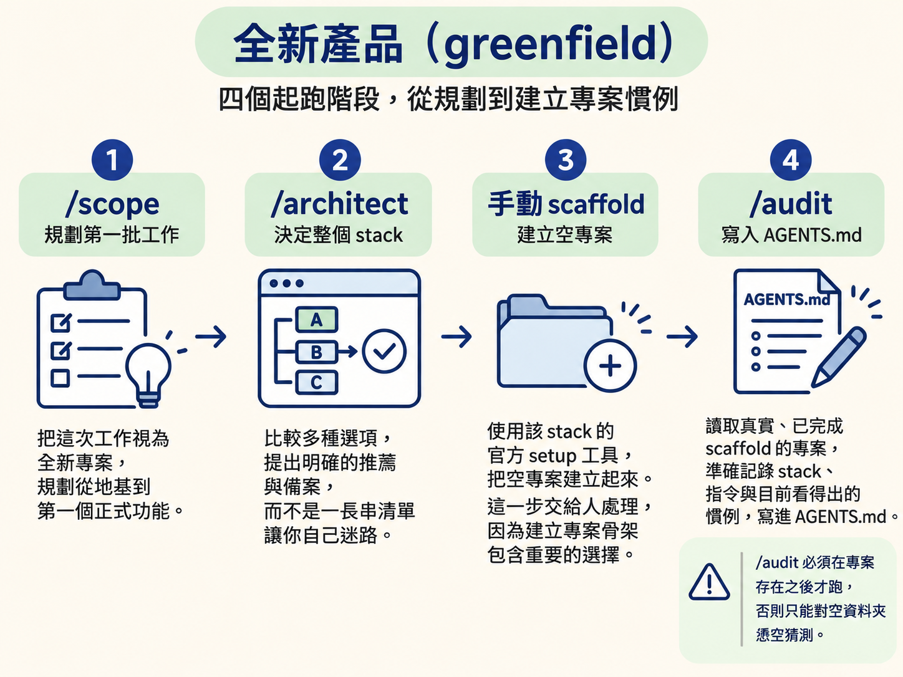
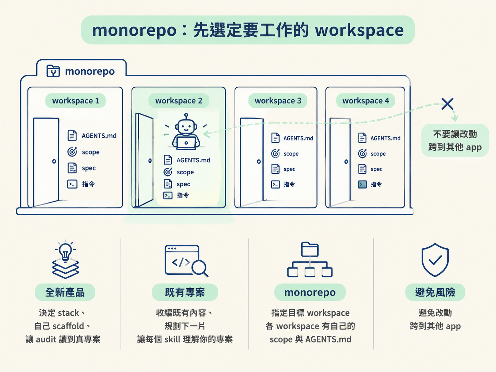
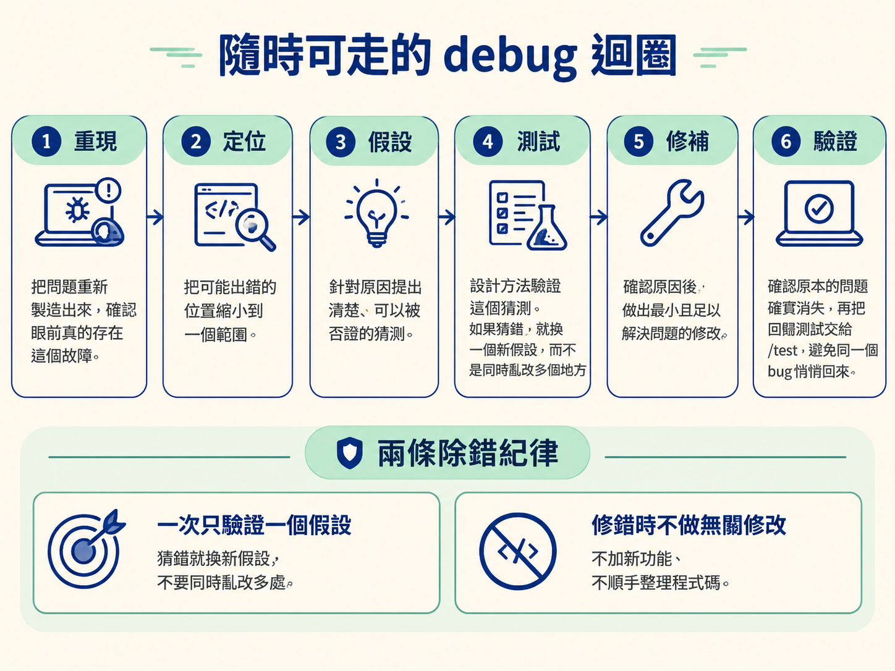

完成這一節後，你應該能分辨 greenfield、brownfield 與 monorepo 三種入口，知道每一種情況該先跑什麼、為什麼要這樣排；你也會理解 /debug 為什麼可以跳過 scope 與 spec，直接進入修錯迴圈。
上一節決定了「這次要跑哪些階段」。但在按下第一個指令之前，還有一個更根本的問題：你現在站在哪裡？
手上如果是一個剛開好的空專案，和面對一份已經長了三年的 codebase，不能用同一個順序硬跑。前者需要先決定方向、建立骨架；後者則要先讀懂現況，否則後面的 skill 就像沒看地圖便開始施工。
關鍵在於 /audit。它會讀懂專案，並把 stack、指令與慣例寫進 AGENTS.md，讓後續每個 skill 都知道自己正在什麼環境裡工作。
如果專案根本還不存在，/audit 只能對著空資料夾猜測；但如果專案早已經有完整內容，/audit 就應該先跑。也就是說，入口不同，流程順序就不同；順序錯了，後面讀到的上下文也可能從第一步就歪掉。
如果要從零開始做一個新產品，建議依照以下順序進行：
/scope。因為目前還沒有程式碼，它會把這次工作視為全新專案，規劃第一批工作，從地基與第一個正式功能開始。/architect 決定整個 stack。這時它會做比較廣的選項比較，提出明確的推薦與備案，而不是丟出一長串清單，讓你自己在裡面迷路。/audit。此時它面對的是一個真實、已完成 scaffold 的專案，因此能準確寫下 AGENTS.md，記錄 stack、指令，以及目前看得出的慣例。
這個順序的重點，不只是「先後順序不能錯」，而是 /audit 必須有東西可讀。
先選好 stack，再把專案建立起來，/audit 才是在替真專案做筆記，而不是對著空資料夾憑空猜測。完成這些步驟後，才進入可以反覆執行的功能迴圈。
如果面對的是已經存在的 codebase，順序則要反過來：
/audit，讓每一個 skill 在動手前就先理解你的專案。/scope，把既有內容「收編」進流程，並在現況上規劃下一個 slice。新專案的邏輯是「先有計畫與 stack，才有專案可讀」；既有專案的邏輯則是「先讀懂已經存在的東西，才談得上下一步要做什麼」。
因此，/audit 放在第一位，是為了讓後續每個決定都建立在正確的專案認識上，而不是讓 agent 把陌生的 codebase 當成空白畫布。
monorepo 是一個 repo 裡放了好幾個專案。在這種結構下，每一件事都應該 scope 到「目前正在處理的 workspace」，而不是整個 repo。
每個 workspace 都有自己的 scope、spec、嵌套的 AGENTS.md、stack 與指令。所有 skill 都留在目標 workspace 裡，使用該 workspace 的指令做事。
這樣的切分就像替每個房間裝上一扇門：你在改一個 app 時，不會不小心走進另一個 app 的房間。你也不必把所有 workspace 的規則都塞在腦中，因為檔案與設定已經替你分好了邊界。
| 起點 | 第一步 | 接著 | 為什麼這樣排 |
|---|---|---|---|
| 全新產品 | /scope | /architect 決定 stack、自己 scaffold、/audit | 讓 audit 讀到真專案，而不是空資料夾 |
| 既有專案 | /audit | /scope 收編既有內容、規劃下一片 | 先讓每個 skill 理解你的專案 |
| monorepo | 指定目標 workspace | 各 workspace 有自己的 scope 與 AGENTS.md | 避免改動跨到其他 app |

前面談的是「有東西要做」時，該從哪裡開始。但如果現在的問題是「東西壞了」，就不需要先規劃，也不需要先寫 spec，可以直接進入 /debug。
/debug 的任務很單純：找出根本原因，並把它修掉。它不是一拿到錯誤就開始亂改，而是按照固定順序縮小問題：
/test，避免同一個 bug 悄悄回來。
這套迴圈有兩條重要紀律。
第一，一次只測一個假設。如果同時改了五個地方，就算問題消失了，也不知道究竟是哪個改動有效；下次再遇到類似問題，仍然無法累積可靠的判斷。
第二，修錯時不要順手做其他事。不要趁機加入新功能，也不要整理無關的程式碼。先把壞掉的東西修好，讓修改範圍保持清楚，才容易驗證結果。
起跑順序取決於你手上的起點。全新產品依序是/scope、由/architect決定 stack、自己 scaffold，最後才跑/audit；關鍵是讓 audit 讀到真專案。既有專案則先跑/audit讀懂現況，再由/scope收編既有內容並規劃下一片。monorepo 要先指定目標 workspace，各自使用自己的檔案與指令，避免改動跨到其他 app。/debug是一條不需要 scope 或 spec 的獨立迴圈：重現、定位、假設、測試、修補、驗證；一次只驗證一個假設，最後把回歸測試交給/test。
現在你已經知道怎麼判斷入口：空專案先規劃與建立骨架，既有專案先讀懂現況，monorepo 先鎖定 workspace，遇到故障則直接進入 /debug。下一步，就是把這些入口對回原本正在執行的 SDD 七階段流程，看看 jsm-skills 的做法在哪裡不同。